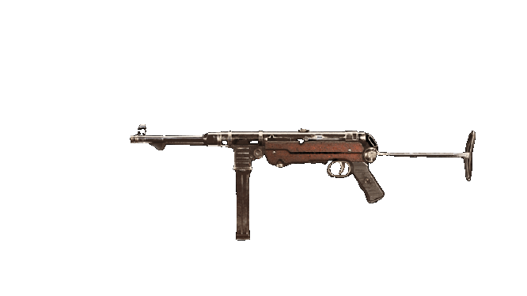

Doporučený loadout
Muzzle
RECOIL BOOSTER
Barrel
VDD 189MM SHORT
Optic
SLATE REFLECTOR
Stock
KRAUSNICK 33M FOLDING
Underbarrel
MARK VI SKELETAL
Magazine
7.62 GORENKO 45 ROUND MAGS
Ammo Type
LENGTHENED
Rear Grip
FABRIC REAR GRIP
Perk 1
BRACE
Perk 2
QUICK
Foto
Statistiky
Reálné informace
MP 40 (Maschinenpistole 40) byl německý samopal používaný v letech druhé světové války. S počtem více než milionu kusů vyrobených od roku 1940 do roku 1945 firmou Erma Werke to byl nejpoužívanější samopal ve výzbroji německé armády. MP 40 patřil do řady samopalů MP 38, MP 38/40 vyráběných německou firmou Erma Werke, kterou německá vláda pověřila vývojem nového samopalu v letech těsně před druhou světovou válkou.
Navržen byl v roce 1938 inspirací od jeho předchůdce MP 38. Při vývoji dala firma důraz na jeho jednoduchou výrobu. Dočkal se rozsáhlého použití mezi pěšáky (zejména veliteli čety a družstev) a výsadkáři na východní a západní frontě i posádkami obrněných vozidel. Díky jeho pokročilým a moderním funkcím se po válce stal oblíbeným mezi vojáky a oblíbený v zemích z různých částí světa. Spojenci jej často nazývali „Schmeisser“ po Hugovi Schmeisserovi, který navrhl samopal MP 18, ačkoli na konstrukci ani výrobě MP40 se nepodílel. Mezi další varianty zbraně patřily MP 40/I a MP 41.